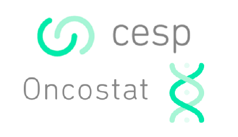

db = edc_example()
db
#> ── EDCimport database ───────────────────────────────────────────────────────────────────────────────────
#> Contains 8 tables: `enrol`, `data1`, `data2`, …, `long_mixed`, and `ae`
#> ℹ Use `EDCimport::load_database(db)` to load the tables in the global environment.
#> ℹ Use `EDCimport::edc_lookup()` to see the summary table.
load_database(db)
ae
#> # A tibble: 175 × 7
#> subjid crfname aesoc aegr n_ae sae crfstat
#> <int> <chr> <chr> <int> <int> <fct> <chr>
#> 1 1 Adverse events Endocrine disorders 2 5 No Incomp…
#> 2 1 Adverse events Gastrointestinal disorders 2 5 No Comple…
#> 3 1 Adverse events Reproductive system and breast disorders 2 5 No Comple…
#> 4 1 Adverse events Renal and urinary disorders 3 5 No Comple…
#> 5 1 Adverse events Neoplasms benign, malignant and unspecified (incl cys… 1 5 No Comple…
#> 6 2 Adverse events Vascular disorders 3 5 No Incomp…
#> 7 2 Adverse events Nervous system disorders 3 5 No Comple…
#> 8 2 Adverse events Injury, poisoning and procedural complications 1 5 No Comple…
#> 9 2 Adverse events Hepatobiliary disorders 1 5 No Comple…
#> 10 2 Adverse events Injury, poisoning and procedural complications 2 5 No Comple…
#> # ℹ 165 more rowsÉquipe ONCOSTAT
Modules de cours de R
Import, checks, et description
Dan Chaltiel
📦 {EDCimport} et 📦 {crosstable}
Plan du module
- Analyse descriptive
- Tables descriptives avec
crosstable - Formatage avec
flextable
- Tables descriptives avec
- Analyse statistique
- Modèles logistiques (
glm) et modèles de Cox (coxph) - Formatage en table
- Tests d’hypothèses
- Modèles logistiques (
Imports, Checks, et visualisation avec EDCimport
Introduction
EDCimport : Framework pour l’analyse de bases de données en recherche clinique
Le package EDCimport
- Package permettant de charger nos bases de données de recherche clinique
- Initialement centré sur TrialMaster, mais maintenant plus large
- Permet aussi le data-checking et la visualisation

Documentation
Accessible dans RStudio et en ligne:
Vocabulaire dans EDCimport
- database : la base de donnée entière, avec ses métadonnées
- dataset : une table de données
- métadonnées : les caractéristiques de la base (date d’extraction, nom du projet…)
- lookup : tableau récapitulatif de la database
Version
Cette présentation a été réalisée avec EDCimport version 0.5.2.9064
Plan de la présentation
Importer ses datas

Fonctions
Selon le type de fichiers présents dans votre export, vous devez utiliser :
read_all_sas(): pour lire les fichiers.sas7bdatread_all_xpt(): pour lire les fichiers.xptread_all_csv(): pour lire les fichiers.csvread_trialmaster(): pour lire une archive zip provenant de TrialMaster.
On utilise ensuite load_database() pour charger toutes les tables dans l’environnement global.
Exemple
C’est le cas le plus simple: un simple Export TrialMaster au format .zip.
Il faut exporter au format SASXPORT en cochant la case “codelist”.
Utilisation
Pour l’exemple, on utilisera la base de données edc_example() qui mime le résultat d’une fonction d’import.
Formats
Formats
Les formats peuvent être issus :
- d’une table d’association
.sas7bdat, - d’une table d’association
.csv, - d’un fichier
procformat.sas(comme avec TrialMaster), - d’un fichier catalogue
.sas7bcat
CNTLOUT
La PROC FORMAT avec option CNTLOUT permet de générer une table d’association en .sas7bdat.
Lookup
Les métadonnées associées au projet sont stockées dans l’environnement du package et sont visibles grâce à la fonction edc_lookup().
edc_lookup()
#> ── Lookup table - EDCimport example (extraction of 2024-01-01) - EDCimport v0.5.2.9064 ──────────────────
#> dataset nrow ncol n_id rows_per_id crfname
#> <chr> <dbl> <dbl> <int> <dbl> <chr>
#> 1 long_pure 150 4 50 3 long data
#> 2 data1 100 7 50 2 data1
#> 3 long_mixed 100 6 50 2 both short and long data
#> 4 data2 50 6 50 1 data2
#> 5 data3 50 7 50 1 data3
#> 6 enrol 50 6 50 1 enrol
#> 7 short 50 5 50 1 short data
#> 8 ae 175 7 48 3.6 Adverse eventsRecherche
- On peut chercher une colonne en particulier
edc_find_column("date") %>% head()
#> # A tibble: 6 × 5
#> dataset crfname names labels prop_na
#> <chr> <chr> <chr> <chr> <dbl>
#> 1 data1 data1 date1 Date at visit 1 0
#> 2 data1 data1 date2 Date at visit 2 0
#> 3 data1 data1 date3 Date at visit 3 0
#> 4 data2 data2 date4 Date at visit 4 0
#> 5 data2 data2 date5 Date at visit 5 0
#> 6 data2 data2 date6 Date at visit 6 0- On peut chercher une valeur en particulier
edc_find_value("disorder") %>% head()
#> # A tibble: 6 × 5
#> subjid dataset column column_label value
#> <chr> <chr> <chr> <chr> <chr>
#> 1 1 ae aesoc AE SOC Endocrine disorders
#> 2 1 ae aesoc AE SOC Gastrointestinal disorders
#> 3 1 ae aesoc AE SOC Reproductive system and breast disorders
#> 4 1 ae aesoc AE SOC Renal and urinary disorders
#> 5 2 ae aesoc AE SOC Vascular disorders
#> 6 2 ae aesoc AE SOC Nervous system disorders
edc_find_value("2010") %>% head()
#> # A tibble: 6 × 5
#> subjid dataset column column_label value
#> <chr> <chr> <chr> <chr> <chr>
#> 1 1 data1 date1 Date at visit 1 2010-04-26
#> 2 1 data1 date1 Date at visit 1 2010-04-26
#> 3 2 data1 date1 Date at visit 1 2010-04-15
#> 4 2 data1 date1 Date at visit 1 2010-04-15
#> 5 3 data1 date1 Date at visit 1 2010-05-08
#> 6 3 data1 date1 Date at visit 1 2010-05-08Appli shiny: edc_viewer()
Nettoyer ses datas
Harmoniser les SUBJID
L’identifiant du patient SUBJID est généralement un numeric ou un character, et peut prendre différentes formes selon les datasets.
Avec edc_unify_subjid(), on peut en faire un factor avec des levels unifiés :
Jointures
C’est très pratique pour les jointures qui peuvent échouer si une table considère SUBJID comme un numeric et l’autre comme un character.
Nettoyer les noms de colonnes
R peut être très tatillon sur les noms de colonnes.
Avec
edc_clean_names(), on peut nettoyer les noms de toutes les colonnes, dans tous les datasets.Par défaut, ça donne des noms ne contenant que des minuscules, nombres, et underscores, mais on peut aussi choisir une fonction custom.
Utilité
C’est surtout utile en cas de base, notamment .csv, avec des noms contenant des accents, espaces, ou autres caractères spéciaux.
Séparer les données long/short
Dans les CRF complexes, on peut avoir des données
short(1 ligne par patient) etlong(plusieurs lignes par patient) dans le même dataset.Avec
edc_split_mixed(), on peut séparer les 2 types de donnéesExemple avec le dataset
ae(adverse events) :- les colonnes
crfnameetn_aesont short (nombre d’AE par patient) - les colonnes
aesoc,aegr, etsaesont longues (détail de chaque AE)
- les colonnes
All at once!
On peut bien sûr combiner ces 3 fonctions :
db = edc_example() %>%
edc_clean_names() %>%
edc_split_mixed(ae) %>%
edc_unify_subjid()
db
#> ── EDCimport database ───────────────────────────────────────────────────────────────────────────────────
#> Contains 10 tables: `enrol`, `data1`, `data2`, …, `ae_short`, and `ae_long`
#> ℹ Use `EDCimport::load_database(db)` to load the tables in the global environment.
#> ℹ Use `EDCimport::edc_lookup()` to see the summary table.Vérifier
ses datas
Warnings
- Pour vérifier les données,
EDCimportpropose un système de warnings. - On filtre une table pour identifier les lignes problématiques et on applique
edc_data_warn(). - Si le résultat n’est pas vide, un warning apparait dans la console.
- Une table récapitulative est disponible avec
edc_data_warnings()pour partager avec le DM.
Bonnes pratiques
- Mettre tous les checks dans un fichier
check.Rqui sera lancé aprèsread.R - Si le problème est résolu dans un nouvel export, le warning n’apparaitra plus
- Si le problème réapparait, le warning reviendra
Warnings: exemple
Exemple de checks
enrol %>%
filter(age>70 | age<25) %>%
edc_data_warn("Age should be 25-70", issue_n=1)
#> Warning: Issue #01: Age should be 25-70 (3 patients: #9, #12, and #18)
ae %>%
filter(is.na(aegr)) %>%
edc_data_warn("AE: Grade manquant", issue_n=2)
data1 %>%
filter(n()>1, .by=subjid) %>%
edc_data_warn("Duplicated patients in `data1` ({nrow(.data)} rows)", issue_n=3)
#> Warning: Issue #03: Duplicated patients in `data1` (100 rows) (50 patients: #1, #2, #3, #4, #5, …)
ae %>%
filter(aegr<1 | aegr>5) %>%
edc_data_stop("Grade AE invalide !")
edc_data_warnings()
#> # A tibble: 2 × 4
#> issue_n message subjid fun
#> <chr> <chr> <list> <chr>
#> 1 01 Age should be 25-70 <chr [3]> cli_warn
#> 2 03 Duplicated patients in `data1` (100 rows) <chr [50]> cli_warnWarnings: export .csv
Si on a besoin de plus de détails que le SUBJID, on peut exporter la table en .csv.
enrol %>%
filter(age<25) %>%
select(subjid, age, arm, enrol_date) %>%
edc_data_warn("Age should not be <25", csv_path="check/check_age_25.csv")
#> Warning: Issue #xx: Age should not be <25 (1 patient: #18)
read.csv2("check/check_age_25.csv")
#> subjid age arm enrol_date
#> 1 18 23.43545 Trt 2010-03-20Communication
Parfait pour la communication DM/Stat.
Par contre les modalités de partage/update du fichier ne sont pas encore parfaites…
Dernières nouvelles
- Pour les analyses de survie, le calcul de la date de dernières nouvelles est crucial.
- La fonction
lastnews_table()permet de récupérer la dernière date pour chaque patient (à partir de tous les datasets) - Il faut enlever les dates administratives avec
except=xxx - Il faut préciser les dates “préférées” avec
prefer=xxx
(Par exemple : tables de followup, fin d’étude…)
OS/PFS
- La pertinence de cette fonction dépend de l’endpoint de survie.
- Si un patient a eu un AE après son last-followup, il est forcément en vie, mais son statut de progression est inconnu.
Erreurs
- Permet aussi de détecter des erreurs de date
Dernières nouvelles: exemple
L’option show_delta=TRUE permet d’identifier des erreurs de date.
lastnews = lastnews_table(except=c("date10"),
prefer=c("data3$date9"),
show_delta=TRUE)
lastnews %>%
filter(delta>0) %>%
arrange(desc(delta)) %>%
head(10)
#> # A tibble: 10 × 8
#> subjid last_date origin_data origin_col origin_label preferred_last_date preferred_origin delta
#> <dbl> <date> <chr> <chr> <chr> <date> <chr> <drtn>
#> 1 1 2010-08-01 data2 date4 Date at visit 4 2010-06-28 data3$date9 33.3296…
#> 2 2 2010-07-31 data2 date4 Date at visit 4 2010-07-09 data3$date9 21.6568…
#> 3 31 2010-07-22 data3 date8 Date at visit 8 2010-07-09 data3$date9 12.4549…
#> 4 20 2010-07-17 data3 date8 Date at visit 8 2010-07-04 data3$date9 12.2084…
#> 5 24 2010-06-26 data3 date8 Date at visit 8 2010-06-17 data3$date9 8.6756…
#> 6 34 2010-07-05 data3 date7 Date at visit 7 2010-06-27 data3$date9 8.5817…
#> 7 3 2010-07-21 data2 date5 Date at visit 5 2010-07-13 data3$date9 8.2653…
#> 8 45 2010-07-11 data3 date8 Date at visit 8 2010-07-05 data3$date9 5.6554…
#> 9 41 2010-07-15 data3 date8 Date at visit 8 2010-07-10 data3$date9 5.3622…
#> 10 19 2010-06-25 data3 date8 Date at visit 8 2010-06-20 data3$date9 5.0644…Duplicate checking
Une erreur très commune et potentiellement grave est la duplication de patients lors des jointures.
Si je veux une table “short” en résultat,
assert_no_duplicate()permet de toujours être certain que le format est correct.Exemple : Je veux compter le nombre de patients par bras, mais je fais une jointure malencontreuse
enrol %>%
assert_no_duplicate() %>%
count(arm)
#> # A tibble: 2 × 2
#> arm n
#> <chr> <int>
#> 1 Ctl 25
#> 2 Trt 25
enrol %>%
edc_left_join(ae) %>% #oopsie
assert_no_duplicate() %>%
count(arm)
#> Error in `assert_no_duplicate()`:
#> ! Duplicate on column "subjid" for values 1, 2, 3, 4, 5, 6, 7, 9, 10, and 11.Visualiser ses datas
Swimmerplot
Permet de détecter les erreurs de date
Remplissage CRF
La fonction edc_crf_plot() montre le taux de remplissage du CRF:
Gridplot Patient/dataset
La fonction edc_patient_gridplot() montre la présence de chaque patient dans les datasets
Utilitaires
Jointures
Nos jointures sont très souvent les mêmes : on joint sur
SUBJIDet on suffixe avec le nom du 2ème dataset.Avec
edc_left_join()(existe aussi enrightetfull), on a la même syntaxe que dansdplyr, mais ce sont les arguments par défaut !
Yes/No
On utilise beaucoup de variables binaires et Oui/Non qui seront décrites en Yes/No (avec Yes en premier)
La fonction
fct_yesno()permet de générer des factors automatiquement
Analyse descriptive avec crosstable
Le package crosstable
- Package permettant de générer des tableaux descriptifs
- Gère quasiment tous les types de variables
(continues, discrètes, …) - Très flexible: adaptabilité des calculs descriptifs
- Permet de calculer automatiquement des tailles d’effet, voire des test statistiques
- S’intègre avec d’autre outils comme
officerouquarto

Fonctions
Fonction
crosstable()pour générer le contenu du tableau descriptif- Crée un objet R de type
data.frame, modifiable si besoin (dplyr)
- Crée un objet R de type
Fonction
as_flextable()pour le formatter graphiquement- Crée un objet de type
flextable, qui représente un tableau HTML
- Crée un objet de type
- Documentation détaillée sur https://danchaltiel.github.io/crosstable/
Astuce
Il y a 2 autres formats d’output, as_gt() et as_workbook(), mais on n’en parlera pas ici.
Dataset mtcars2
Dataset d’exemple utilisé dans le package (qui décrit 32 voitures de collection)
library(tidyverse)
library(crosstable)
head(mtcars2, 4)
#> # A tibble: 4 × 14
#> model mpg cyl disp hp drat wt qsec vs am gear carb hp_date qsec_posix
#> <labe> <lab> <fct> <lab> <lab> <lab> <lab> <lab> <lab> <lab> <fct> <lab> <date> <dttm>
#> 1 Mazda… 21.0 6 160 110 3.90 2.620 16.46 vsha… manu… 4 4 2010-04-21 2010-01-17 12:02:24
#> 2 Mazda… 21.0 6 160 110 3.90 2.875 17.02 vsha… manu… 4 4 2010-04-21 2010-01-18 01:28:48
#> 3 Datsu… 22.8 4 108 93 3.85 2.320 18.61 stra… manu… 4 1 2010-04-04 2010-01-19 15:38:24
#> 4 Horne… 21.4 6 258 110 3.08 3.215 19.44 stra… auto 3 1 2010-04-21 2010-01-20 11:33:36get_label(mtcars2)
#> model mpg cyl disp
#> "Model" "Miles/(US) gallon" "Number of cylinders" "Displacement (cu.in.)"
#> hp drat wt qsec
#> "Gross horsepower" "Rear axle ratio" "Weight (1000 lbs)" "1/4 mile time"
#> vs am gear carb
#> "Engine" "Transmission" "Number of forward gears" "Number of carburetors"
#> hp_date qsec_posix
#> "Some nonsense date" "Date+time"Exemple simple
Number of cylinders | |||
|---|---|---|---|
4 | 6 | 8 | |
Miles/(US) gallon (mpg) | |||
Min / Max | 21.4 / 33.9 | 17.8 / 21.4 | 10.4 / 19.2 |
Med [IQR] | 26.0 [22.8;30.4] | 19.7 [18.6;21.0] | 15.2 [14.4;16.2] |
Mean (std) | 26.7 (4.5) | 19.7 (1.5) | 15.1 (2.6) |
N (NA) | 11 (0) | 7 (0) | 14 (0) |
Engine (vs) | |||
straight | 10 (71%) | 4 (29%) | 0 (0%) |
vshaped | 1 (6%) | 3 (17%) | 14 (78%) |
Exemple compliqué
crosstable(mtcars2, cols=c(starts_with("cy"), ends_with("at")),
by=c(am, vs),
num_digits=3,
funs=c(mean, quantile),
funs_arg=list(probs=c(.25,.75)),
effect=TRUE) %>%
as_flextable(keep_id=TRUE, compact=TRUE, header_show_n=2)Engine | straight (N=14) | vshaped (N=18) | ||
|---|---|---|---|---|
Transmission | auto | manual | auto | manual |
Number of cylinders (cyl) | ||||
4 | 3 (27%) | 7 (64%) | 0 (0%) | 1 (9%) |
6 | 4 (57%) | 0 (0%) | 0 (0%) | 3 (43%) |
8 | 0 (0%) | 0 (0%) | 12 (86%) | 2 (14%) |
Rear axle ratio (drat) | ||||
mean | 3.570 | 4.149 | 3.121 | 3.935 |
quantile 25% | 3.385 | 3.965 | 3.052 | 3.690 |
quantile 75% | 3.920 | 4.165 | 3.165 | 4.140 |
Arguments principaux
La documentation de crosstable() est disponible sur RStudio et en ligne.
Il y a un grand nombre de paramètres, les principaux sont les suivants:
data: Dataset source, vient souvent du pipe.cols: Variables à analyser. Peut utiliser la syntaxe tidyselect 🤩.by: Variables de regroupement.total: Affiche les totaux des colonnes ("row"), des lignes ("column"), ou des deux ("both"). Oui, c’est contre-intuitif ¯\(ツ)/¯percent_patternetpercent_digits: Contrôle les pourcentages.funsetfuns_arg: Contrôle les calculs sur les variables numériques.
Arguments accessoires
Arguments moins importants mais souvent utiles
showNA: Affiche ou non les valeurs manquantes.drop_levels: Supprime les levels non observés.remove_zero_percent: Supprime les proportions quand N=0.unique_numeric: Nombre minimum de valeurs uniques pour considérer une variable numérique. Par défaut:3.test&effect: Calcule des tests statistiques ou des effect-sizes. A utiliser avec parcimonie.
Tidyselect
Syntaxe permettant de sélectionner des colonnes intelligemment, utilisée notamment dans dplyr::select().
Documentation dans le help ?tidyselect::starts_with:
starts_with(x): colonnes qui commencent parxends_with(x): colonnes qui terminent parxcontains(x): colonnes qui contiennentxmatches(): colonnes qui correspondent à une expression régulière
Astuces
- Utilisez
ignore.case = TRUEpour que la sélection ignore les majuscules.
- Utilisez https://regex101.com pour écrire vos regex.
Tidyselect : exemple
crosstable(mtcars2,
cols=c(starts_with("cy"), ends_with("at"),
contains("is"), matches("g.*r"))) %>%
as_flextable(keep_id=TRUE, compact=FALSE).id | label | variable | value |
|---|---|---|---|
cyl | Number of cylinders | 4 | 11 (34%) |
6 | 7 (22%) | ||
8 | 14 (44%) | ||
drat | Rear axle ratio | Min / Max | 2.8 / 4.9 |
Med [IQR] | 3.7 [3.1;3.9] | ||
Mean (std) | 3.6 (0.5) | ||
N (NA) | 32 (0) | ||
disp | Displacement (cu.in.) | Min / Max | 71.1 / 472.0 |
Med [IQR] | 196.3 [120.8;326.0] | ||
Mean (std) | 230.7 (123.9) | ||
N (NA) | 32 (0) | ||
gear | Number of forward gears | 3 | 15 (47%) |
4 | 12 (38%) | ||
5 | 5 (16%) |
Labels
set_label(x, lab),get_label(x),copy_label_from(x, y)apply_labels(), utile après un mutate pour labelliser les nouvelles colonnes
rename_with_labels(), utile pour les plots
Astuce
- Liste des fonctions dans la documentation : index.html#labelling
- Aussi compatible avec les packages labelled et hmisc.
Arguments : unique_numeric
Pas beaucoup de sens de calculer la moyenne si très peu de niveaux.
L’argument
unique_numeric=3permet de décider à partir de combien ça a du sens.S’il vaut
0c’est toujours numérique, s’il vautInfc’est toujours factor.
tibble(x=rep(1:3, 100)) %>% crosstable()
#> # A tibble: 3 × 4
#> .id label variable value
#> <chr> <chr> <chr> <chr>
#> 1 x x 1 100 (33%)
#> 2 x x 2 100 (33%)
#> 3 x x 3 100 (33%)
#
tibble(x=rep(1:3, 100)) %>%
crosstable(unique_numeric=0)
#> # A tibble: 4 × 4
#> .id label variable value
#> <chr> <chr> <chr> <chr>
#> 1 x x Min / Max 1.0 / 3.0
#> 2 x x Med [IQR] 2.0 [1.0;3.0]
#> 3 x x Mean (std) 2.0 (0.8)
#> 4 x x N (NA) 300 (0)tibble(x=rep(1:4, 100)) %>% crosstable()
#> # A tibble: 4 × 4
#> .id label variable value
#> <chr> <chr> <chr> <chr>
#> 1 x x Min / Max 1.0 / 4.0
#> 2 x x Med [IQR] 2.5 [1.8;3.2]
#> 3 x x Mean (std) 2.5 (1.1)
#> 4 x x N (NA) 400 (0)
tibble(x=rep(1:4, 100)) %>%
crosstable(unique_numeric=Inf)
#> # A tibble: 4 × 4
#> .id label variable value
#> <chr> <chr> <chr> <chr>
#> 1 x x 1 100 (25%)
#> 2 x x 2 100 (25%)
#> 3 x x 3 100 (25%)
#> 4 x x 4 100 (25%)Arguments : percent_pattern
- Vignette spécifique dans la documentation : percent_pattern.html
Attention
Si total=TRUE, il faut un pattern pour les totaux. Voir la syntaxe dans la vignette.
Arguments : funs & funs_arg
- Permettent de contrôler les calculs effectués sur les variables numériques
funs_arg permet d’ajouter des arguments à funs.
Mais il vaut mieux faire une fonction custom.
my_summary_function = function(x){
c("Med"=median(x), "Mean"=mean(x), "Std dv"=sd(x))
}
crosstable_options(funs=c(" "=my_summary_function))
crosstable(mtcars2, cols=c(mpg, wt)) %>%
as_flextable(keep_id=TRUE)value | |
|---|---|
Miles/(US) gallon (mpg) | |
Med | 19.2 |
Mean | 20.1 |
Std dv | 6.0 |
Weight (1000 lbs) (wt) | |
Med | 3.3 |
Mean | 3.2 |
Std dv | 1.0 |
Arguments : effect & test
Les effect-sizes, c’est cool 😊
Transmission | effect | ||
|---|---|---|---|
auto | manual | ||
Engine | Odds ratio [95% Wald CI], ref='manual vs auto' | ||
straight | 7 (50%) | 7 (50%) | |
vshaped | 12 (67%) | 6 (33%) | |
1/4 mile time | Difference in means (t-test CI), ref='auto' | ||
mean | 18.2 | 17.4 | |
Les tests automatiques, c’est pas cool 😫
Transmission | test | ||
|---|---|---|---|
auto | manual | ||
Engine | p value: 0.3409 | ||
straight | 7 (50%) | 7 (50%) | |
vshaped | 12 (67%) | 6 (33%) | |
1/4 mile time | p value: 0.2057 | ||
mean | 18.2 | 17.4 | |
Attention
Les tests dans les tables de description sont non-recommandés (CONSORT 2010)
Arguments de as_flextable()
Documentation en ligne ici.
Il y a un grand nombre de paramètres, les principaux sont les suivants:
keep_id: garde les noms de variables avec les labels, utile pour débuguercompact: format de la table (je préfèreTRUE)padding_v: mettre0pour un tableau “comprimé”header_show_n: AfficherN=xxxdans l’en-tête du tableau
Options
Tous les arguments de
crosstable()et deas_flextable()peuvent être définis à un niveau global.Il y a aussi quelques options plus mineures qui peuvent être utiles.
Utiliser la fonction
crosstable_options()pour avoir la saisie semi-automatique et le help.Exemple :
Post-processing
crosstable() retourne une dataframe, qu’on peut modifier avant de la transformer en flextable.
set.seed(42)
f = function(N) sample(c("Yes", "No"), size=N, replace=TRUE)
df = tibble(id=1:50, q1=f(50), q2=f(50), q3=f(50))
head(df, n=10)
#> # A tibble: 10 × 4
#> id q1 q2 q3
#> <int> <chr> <chr> <chr>
#> 1 1 Yes No No
#> 2 2 Yes Yes No
#> 3 3 Yes No Yes
#> 4 4 Yes No No
#> 5 5 No No Yes
#> 6 6 No No No
#> 7 7 No Yes No
#> 8 8 No No Yes
#> 9 9 Yes Yes No
#> 10 10 No Yes Yesct = crosstable(df, cols=starts_with("q"), percent_digits=0)
class(ct)
#> [1] "crosstable" "tbl_df" "tbl" "data.frame"
ct
#> # A tibble: 6 × 4
#> .id label variable value
#> <chr> <chr> <chr> <chr>
#> 1 q1 q1 No 27 (54%)
#> 2 q1 q1 Yes 23 (46%)
#> 3 q2 q2 No 29 (58%)
#> 4 q2 q2 Yes 21 (42%)
#> 5 q3 q3 No 25 (50%)
#> 6 q3 q3 Yes 25 (50%)Description: Conclusion
Le package crosstable permet de faire des tableaux très variés
Ajoutez une issue sur GitHub si vous avez un bug
Ajoutez une issue sur GitHub si vous avez une feature request
Dans le module 6, Charlotte vous montrera
officer, qui permet d’intégrer les crosstables dans des rapports automatisés
Le code source de cette présentation est disponible sur GitHub.